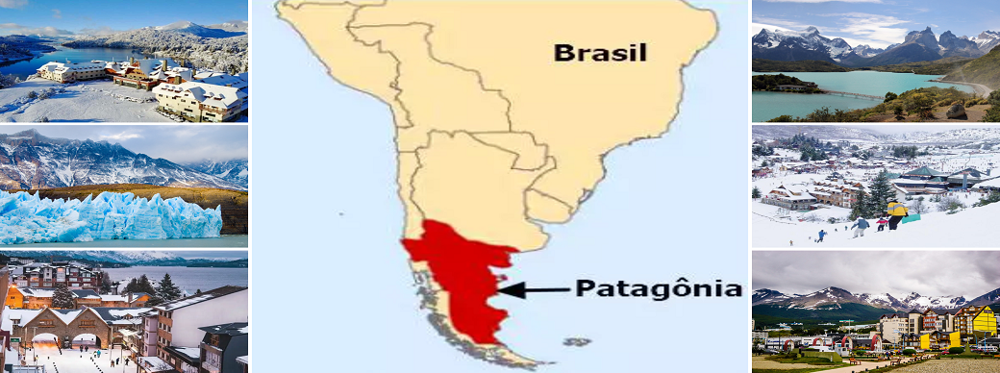
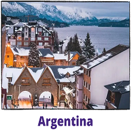
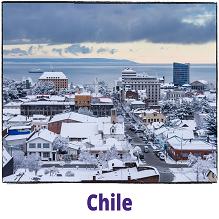

Conheça um pouco...
A Patagônia é uma região que abrange uma vasta área no extremo sul da América do Sul, ocupando partes da Argentina e do Chile. Quando eu digo "vasta área", é isso que eu quero dizer gente, é muuuuito grande. Para entender melhor, pense quando falamos em "Amazônia". A região amazônica é tão grande que pega parte de Brasil, Bolívia, Colômbia, Equador, Guiana, Guiana Francesa, Peru, Suriname e Venezuela. E mesmo se você quiser visitar só a parte do Brasil, vai ter que escolher pontos nos estados de Acre, Amapá, Amazonas, Pará, Roraima, Rondônia, Mato Grosso, Maranhão e Tocantins...
Então, a região patagônica é enorme também... Ela pega Chile e Argentina descendo em direção à ponta final do continente. Temos que entender que em uma viagem só é impossível ver tudo! Atualmente, a região da Patagônia é conhecida como um dos principais destinos de ecoturismo e turismo de aventura do mundo. Pelas grandes dimensões e grande variedade de paisagens, são muitas as possibilidades de turismo. A pontinha da nossa América do Sul tem uma natureza que é uma das mais intocadas do planeta Terra e impressiona pela sua grandeza, sua beleza e sua ampla diversidade de vegetação, clima e relevo.
O que separa a Patagônia do Chile e a Patagônia da Argentina é a Cordilheira dos Andes. Isso significa que ambos os lados vão ter montanhas gigantescas nevadas, vulcões e geleiras. Essa é a semelhança entra os dois lados. Abaixo, seguem algumas diferenças entre elas:
 No lado da Argentina, encontramos uma região mais árida, com campos e desertos. Isso significa mais estradas que por si só já são uma atração. Super legal pra "road trips". Outro aspecto interessante é que a maior parte da Patagônia encontra-se na Argentina, onde inclusive se concentram um maior número de cidades, o que consequentemente fez com que essa parte fosse mais visitada, mais explorada e que acaba oferecendo uma maior infraestrutura para receber os turistas. Algumas das cidades mais famosas da Patagônia Argentina são: El Calafate, Ushuaia, Vila de la Angostura e Bariloche... O destaque vai para Ushuaia, mais conhecida como a cidade “do fim do mundo”, ou cidade mais austral do mundo, por se localizar no extremo austral da América do Sul. Outro destaque vai para os 11 parques nacionais e outras diversas reservas naturais, onde se encontra muita vida selvagem e uma grande variedade de espécies de animais. Como na Península Valdés e Punta Tombo, com a maior colônia de pinguim-de-magalhães do mundo.
 No lado do Chile, temos uma floresta temperada e os famosos fiordes. Punta Arenas é um dos principais pontos do país, a porta de entrada ou saída dos navios de cruzeiros. A geografia da Patagônia Chilena oferece o melhor de dois mundos, ricas áreas verdes arborizadas e uma região completamente inóspita, onde se encontra a terceira maior extensão de gelos continentais do mundo. A região também é bem conhecida pela sua grande quantidade de águas cristalinas, com tons esverdeados, muitos terrenos bem arborizados e uma vegetação predominante de estepe. O Parque Nacional Torres del Paine é, sem sombra de dúvidas, a maior atração turística da Patagônia Chilena, ele começa na cidade de Puerto Natales. Ali, você vai encontrar uma geografia excepcional de majestosos maciços, icebergs, lagos em tom de turquesa, rios e extensos pampas visitados por guanacos, ñandúes e pumas. É um lugar maravilhoso, com circuitos de Trekking mundialmente famosos, como W, O e Q.